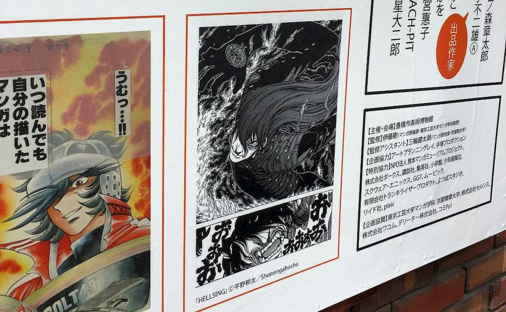

豊橋美術博物館で4月29日〜6月5日まで開催されている「描く！マンガ展」にゴールデンウィークのお休みを使って行ってきました。手塚治虫をはじめ石ノ森章太郎や赤塚不二夫、さいとうたかをなどの巨匠をはじめ、僕の敬愛する平野耕太（HellsingやDriftersなど）や島本和彦、あずまきよひこなど僕が持っているマンガの作者の生原稿が見られるという機会に触れることができて感無量でした。
実物を間近でみると、線の持つ迫力というのが伝わって暫しの間絵の前で釘づけでした。
毎週月曜日休館だそうなので、見に行かれる方はサイトをチェックして行くべし！ (展示は終了しました。)
